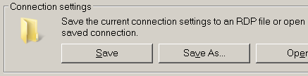

MSTSC
Connect and login to a remote machine using the Remote Desktop Protocol (RDP) also known as Terminal Server Connection (TSC).
Syntax
MSTSC [connection_file] [/v:server[:port]] [/g:gateway] [/admin] [/f[ullscreen]]
[/w:width /h:height] [/public] | [/span] [/multimon] [/edit "connection file"]
[/restrictedAdmin] [/remoteGuard] [/prompt] [/shadow:sessionID [/control] [/noConsentPrompt]]
Options
"connection_file" The name of an .RDP file to use for the connection.
/v:server[:port] The remote PC to which you want to connect.
/g:gateway The RD Gateway server to use for the connection.
This parameter is only read if the endpoint remote PC is specified with /v.
/admin Connect you to the session for administering a remote PC.
/f Start Remote Desktop in full-screen mode.
/w:width Width of the RDP screen
/h:height Height of the RDP screen
/public Run Remote Desktop in public mode. In public mode, passwords and bitmaps are not cached.
/span Match the remote desktop width and height with the local virtual desktop, spanning across multiple
monitors, if necessary. To span across monitors, the monitors must be arranged to form a rectangle.
/multimon Configure the Remote Desktop Services session monitor layout to be identical to the current
client-side configuration.
/edit Open the specified .RDP connection file for editing.
/restrictedAdmin Connect you to the remote PC in Restricted Administration mode.
In this mode, credentials won't be sent to the remote PC, which can protect you if you connect
to a PC that has been compromised. However, connections made from the remote PC might not be
authenticated by other PCs, which might impact application functionality and compatibility.
This parameter implies /admin.
/remoteGuard Connect your device to a remote device using Remote Guard.
Remote Guard prevents credentials from being sent to the remote PC, which can help protect your
credentials if you connect to a remote PC that has been compromised.
Unlike Restricted Administration mode, Remote Guard also supports connections made from the remote
PC by redirecting all requests back to your device.
/prompt Prompt for your credentials when you connect to the remote PC.
/shadow:sessionID The ID of the session to shadow.
/control Allow control of the session when shadowing.
/noConsentPrompt Allow shadowing without user consent.
To connect to a remote computer the user account must be a member of the local group 'Remote Desktop users' on the remote server (either directly or inherited via a global group) in addition the user account needs the privilege SeRemoteInteractiveLogonRight (allow logon through RDP/Terminal Services.)
The command CMDKEY can be used to setup/save the password credentials used by Remote Desktop.
Shortcut Keys
Shortcut keys that can be used when connected to a Remote Desktop:
| Windows Shortcut |
Remote Desktop |
Description |
| Ctrl+ALT+Del |
Ctrl+ALT+END |
Bring up the Windows Security dialog box. |
| ALT+TAB |
ALT+Page Up |
Switch between programs from left to right. |
| ALT+Shift+TAB |
ALT+Page Down |
Switch between programs from right to left. |
ALT+Esc
ALT+Shift+Esc |
ALT+INSERT |
Switch between programs in the order they were started. |
| Ctrl+Esc |
ALT+HOME |
Display the Start menu. |
| n/a |
Ctrl+ALT+BREAK |
Switch the client between full-screen mode and window mode. |
| ALT+Space Bar |
ALT+Delete |
Displays the remote window's Control menu |
| ALT+Print Screen |
Ctrl+ALT+NumPad MINUS |
Place an image of active window onto the Terminal Services clipboard. |
| Print Screen |
Ctrl+ALT+NumPad PLUS |
Place an image of the entire TS client on the Terminal Services clipboard.
This is almost the same as pressing ALT+Print Screen to capute the window locally but removes the Windows chrome and so shows more of the remote window. |
If the RDP shortcut keys don't work - this is dependent on your RDP options/settings.
The window may need to be full screen to accept shortcut keys.

All the RDP connection settings can be saved to a .rdp file, which you can then run from a shortcut:

The default settings are saved in default.rdp, you can also edit the .rdp file, the settings while scarcely documented all in plain text.
Examples:
MSTSC /v:MyServer /f /admin
MSTSC /v:127.0.0.1 /w:1024 /h:768
MSTSC /v:MyServer /w:800 /h:600
MSTSC /edit filename.rdp
Error: "Your credentials did not work"
This error can have several causes:
If using a domain account, prefix with the domain name: SS64dom\user64
If the account is a non-administrator, you may need to grant logon rights as described above.
If the password contains any special characters: $,/,\, Tabs etc then copy and paste of the password to an RDP session may not work.
Specific problems: copy/paste will convert TABs into spaces and double $$'s are removed (e.g. Pa$$word1)
“Ignorance is preferable to error; and he is less remote from the truth who believes nothing, than he who believes what is wrong” - Thomas Jefferson
Related:
Remote Desktop Connection Manager - RDP to multiple machines.
Q216783 - Keep-Alive Disconnected TS Connections
Q2726399 - Cannot change the DPI setting through an RDP session.
MAPISEND - Send email from the command line.
RMTSHARE - Share a folder or printer.
SHORTCUT - Create a windows shortcut.
SHADOW - Monitor/View another users running RDP session.
SHUTDOWN - Shutdown the computer/Log off a user.
TSDISCON - Disconnect a Remote Desktop Session.
VMConnect - Connect to a Hyper-V Virtual Machine.
Remote Desktop Services Shortcut Keys - Microsoft.
Equivalent bash command (Linux): VNCconnect or screen
Copyright © 1999-2020
SS64.com
Some rights reserved